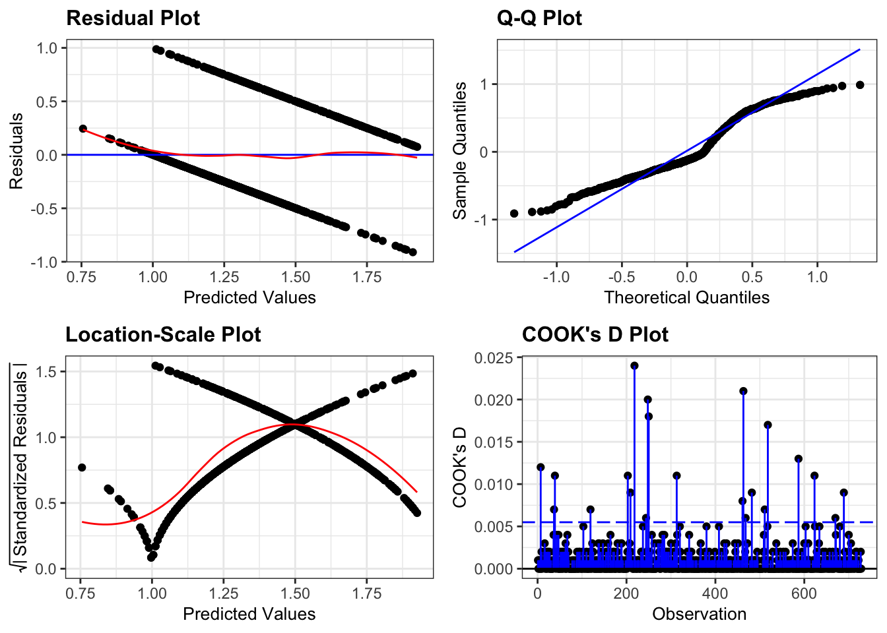
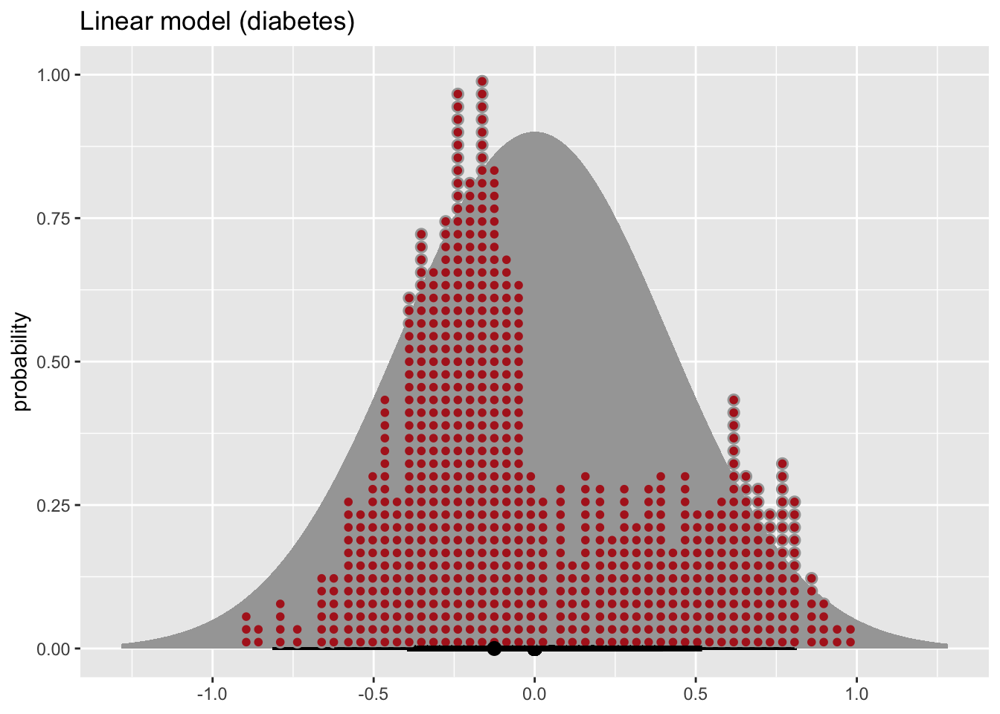

Binary response
- How do we analyse data with a binary outcome?
- Can we test if our model is any good?
- Be able to perform a logistic regression with a binary outcome
- Predict outcomes of new data, based on a defined model
- Evaluate model reliability by using training and test data sets
Libraries and functions
| Library | Description |
|---|---|
tidyverse |
A collection of R packages designed for data science |
tidymodels |
A collection of packages for modelling and machine learning using tidyverse principles |
palmerpenguins |
Package that contains data on penguins |
Datasets
The example in this section uses the following data set:
data/diabetes.csv
This is a data set comprising 768 observations of three variables (one dependent and two predictor variables). This records the results of a diabetes test result as a binary variable (1 is a positive result, 0 is a negative result), along with the result of a glucose test and the diastolic blood pressure for each of 767 women. The variables are called test_result, glucose and diastolic.
Visualise the data
First we load the data, then we visualise it.
First, we load and inspect the data:
diabetes <- read_csv("data/diabetes.csv")Looking at the data, we can see that the test_result column contains zeros and ones. These are test result outcomes and not actually numeric representations.
This will cause problems later, so we need to tell R to see these values as factors.
diabetes <- diabetes %>%
mutate(test_result = factor(test_result))We can plot the data:
diabetes %>%
ggplot(aes(x = test_result, y = glucose)) +
geom_boxplot()
It looks as though the patients with a positive diabetes test have slightly higher glucose levels than those with a negative diabetes test.
We can visualise that differently by plotting all the data points as a classic binary response plot:
diabetes %>%
ggplot(aes(x = glucose, y = test_result)) +
geom_point()
This presents us with a bit of an issue. We could fit a linear regression model to these data. We’d have to see the test result as a numeric outcome, because linear regression models only deal with numerical response variables:
diabetes %>%
mutate(test_result = as.numeric(test_result)) %>%
ggplot(aes(x = glucose, y = test_result)) +
geom_smooth(method = "lm") +
geom_point()Of course this is rubbish - we can’t have test results outside the range of [0, 1].
But for the sake of exploration, let’s look at the assumptions:
diabetes %>%
mutate(test_result = as.numeric(test_result)) %>%
lm(test_result ~ glucose, data = .) %>%
resid_panel(plots = c("resid", "qq", "ls", "cookd"),
smoother = TRUE)`geom_smooth()` using formula 'y ~ x'
`geom_smooth()` using formula 'y ~ x'
They’re pretty extremely bad.
- The response is not linear (Residual Plot, binary response plot, common sense).
- The residuals are not distributed normally (Q-Q Plot)
- The variance is not homogeneous across the predicted values (Location-Scale Plot)
- But - there is always a silver lining - we don’t have influential data points.
Another way of viewing the residuals (apart from the Q-Q plot) is as a dot-plot. The ggdist and distributional packages are extremely useful for this kind of stuff.
What I’m doing here is:
- define the model
- create a normal distribution with \(\mu = 0\) and \(\sigma = 0.415\) (I’ve calculated these from the residuals with
rstatix::get_summary_stats) - plot the residuals
diabetes %>%
mutate(test_result = as.numeric(test_result)) %>%
lm(test_result ~ glucose, data = .) %>%
resid() %>%
as_tibble() %>%
# rstatix::get_summary_stats()
ggplot(aes(x = value)) +
stat_dist_halfeye(aes(dist = dist_normal(0,0.415)),
orientation = "horizontal") +
stat_dotsinterval(aes(x = value),
orientation = "horizontal",
fill = "firebrick", scale = 1) +
labs(title = "Linear model (diabetes)", y = "probability", x = NULL)
This again tells us that the residuals are really not normally distributed.
Model building
So we’ve established that we shouldn’t be using a standard linear regression model. From the introduction we’ve learned that we can use a binomial model instead. We are specifically using a logistic model, which is a binomial model with a logistic link function.
There are different ways to construct a logistic model.
In tidymodels we have access to a very useful package: parsnip, which provides a common syntax for a whole range of modelling libraries. This means that the syntax will stay the same as you do different kind of model comparisons. So, the learning curve might be a bit steeper to start with, but this will pay dividend in the long-term (just like when you started using R!).
First, we need to load tidymodels (install it first, if needed):
# install.packages("tidymodels")
library(tidymodels)The workflow in parsnip is a bit different to what we’re used to so far. Up until now, we’ve directly used the relevant model functions to analyse our data, for example using the lm() function to create linear models.
Using parsnip we approach things in a more systematic manner. At first this might seem unnecessarily verbose, but there are clear advantages to approaching your analysis in a systematic way. For example, it will be straightforward to implement other types of models using the same workflow, which you’ll definitely find useful when moving on to more difficult modelling tasks.
Using tidymodels we specify a model in three steps:
- Specify the type of model based on its mathematical structure (e.g., linear regression, logistic regression, poisson regression etc).
For example:
linear_reg()for linear regressionlogistic_reg()for logistic regressionpoisson_reg()for poisson regression (more on this later)
When required, declare the mode of the model. The mode reflects the type of prediction outcome. For numeric outcomes, the mode is regression; for qualitative outcomes, it is classification. If a model can only create one type of model, such as logistic regression, the mode is already set to, in this case,
mode = "classification".Specify the engine for fitting the model. This usually is the software package or library that should be used.
For example,
"lm"for linear models"glm"for generalised linear models"stan"for Bayesian inference
You can find out which engines can be used with the show_engines() function. The command show_engines("logistic_reg") will give you the available engines for the logistic_reg() function.
So, we can create the model as follows:
dia_mod <- logistic_reg() %>%
set_mode("classification") %>%
set_engine("glm")Note that we are not actually specifying any of the variables just yet! All we’ve done is tell R what kind of model we’re planning to use. If we want to see how parsnip converts this code to the package syntax, we can check this with translate():
dia_mod %>% translate()Logistic Regression Model Specification (classification)
Computational engine: glm
Model fit template:
stats::glm(formula = missing_arg(), data = missing_arg(), weights = missing_arg(),
family = stats::binomial)This shows that we have a logistic regression model, where the outcome is going to be a classification (in our case, that’s a positive (1) or negative test (0) result).
The model fit template tells us that we’ll be using the glm() function from the stats package (stats::glm). This function several arguments:
- a
formula, which we’ll specify later data, which we’ll provide in a bitweights, if we want to add prior weights to our variable - we don’t have to concern ourselves with this - and- a
familyargument, which is already set tobinomial
family argument
The family argument gives us a description of the error distribution and link function that will be used in the model. For the diabetes data set we are looking at a binary (0 | 1) outcome - which we can model using a binomial model.
If we’d want to specify it manually, then we’d use
set_engine("glm", family = stats::binomial(link = "logit"))
which sets the family to binomial, using a logit link function.
Now we’ve specified what kind of model we’re planning to use, we can fit our data to it, using the fit() function:
dia_fit <- dia_mod %>%
fit(test_result ~ glucose,
data = diabetes)We can look at the output directly, but I prefer to tidy the data up using the tidy() function from broom package:
dia_fit %>% tidy()# A tibble: 2 × 5
term estimate std.error statistic p.value
<chr> <dbl> <dbl> <dbl> <dbl>
1 (Intercept) -5.61 0.442 -12.7 6.90e-37
2 glucose 0.0395 0.00340 11.6 2.96e-31The estimate column gives you the coefficients of the logistic model equation. We could use these to calculate the probability of having a positive diabetes test, for any given glucose level, using the following equation:
\[ P(positive \ test\ result) = \frac{\exp(-5.61 + 0.04 \times glucose)}{1 + \exp(-5.61 + 0.04 \times glucose)} \]
We started with:
Our linear predictor equation \[logit(p) = \beta_0 + \beta_1 x_1 + ... + \beta_p x_p\]
and link function \[logit(p) = log(\frac{p}{1 - p})\]
Our coefficients are as follows:
| coefficient | value |
|---|---|
| \(\beta_0\) | -5.6117317 |
| \(\beta_1\) | 0.0395101 |
Which means that we can write the linear predictor equation as follows:
\[logit(p) = -5.61 + 0.04 \times glucose\] We still have to take into account our link function. Combining the two equations gives us:
\[log(\frac{p}{1 - p}) = -5.61 + 0.04 \times glucose\]
To get our \(p\) (the probability of a mouse surviving our treatment), we need to exponentiate our equation:
\[\frac{p}{1 - p} = \exp{(-5.61 + 0.04 \times glucose)}\]
leading to…
\[p = \frac{\exp{(-5.61 + 0.04 \times glucose)}}{1 + \exp{(-5.61 + 0.04 \times glucose)}}\]
But of course we’re not going to do it that way. We’ll let R deal with that in the next section.
The std.error column gives you the error associated with the coefficients and the statistic column tells you the Z-statistic value.
The values in p.value merely show whether that particular coefficient is significantly different from zero. This is similar to the p-values obtained in the summary output of a linear model, and as before, for continuous predictors these p-values can be used as a rough guide as to whether that predictor is important (so in this case glucose appears to be significant). However, these p-values aren’t great when we have multiple predictor variables, or when we have categorical predictors with multiple levels (since the output will give us a p-value for each level rather than for the predictor as a whole).
Model predictions
What if we got some new glucose level data and we wanted to predict if people might have diabetes or not?
We could use the existing model and feed it some data:
# create a dummy data set using some hypothetical glucose measurements
diabetes_newdata <- tibble(glucose = c(188, 122, 83, 76, 144))
# predict if the patients have diabetes or not
augment(dia_fit,
new_data = diabetes_newdata)# A tibble: 5 × 4
glucose .pred_class .pred_0 .pred_1
<dbl> <fct> <dbl> <dbl>
1 188 1 0.140 0.860
2 122 0 0.688 0.312
3 83 0 0.912 0.0885
4 76 0 0.931 0.0686
5 144 1 0.481 0.519 Although you are able to get the predicted outcomes (in .pred_class), I would like to stress that this is not the point of running the model. It is important to realise that the model (as with all statistical models) creates a predicted outcome based on certain probabilities. It is therefore much more informative to look at how probable these predicted outcomes are. They are encoded in .pred_0 and .pred_1.
For the first value this means that there is a 14% chance that the diabetes test will return a negative result and around 86% chance that it will return a positive result.
Exercise: Penguins
To practice this a bit more, we’ll be using a data set about penguins. The data are from the palmerpenguins package, so load that if needed. The data set contains information on penguins at the Palmer Station on Antarctica. Chilly.
There is also a built-in package called penguins in R. Which can cause some issues sometimes. If you’re having problems creating some of the graphs, then run the following command to ensure that the correct penguins data set is loaded:
data("penguins", package = "palmerpenguins")Have a look at the plot below, where we are comparing the bill length (bill_length_mm) of three species of penguins (species) against flipper length (flipper_length_mm).
We are also colouring the data based on sex (sex) and for good measure we’re also including information on the body size (body_mass_g).

It looks like female penguins are smaller with different sized bills and it would be interesting (yes, it would!) to investigate this further.
I would like you to do the following:
- load the data into an object called
penguins - create a logistic model and fit the data to it, using
sexas a classifier - is bill length an important indicator of sex?
First, we load the data:
data("penguins", package = "palmerpenguins")We already have a reasonably good idea of what we’re looking at, but it can never hurt to understand your data better, so:
head(penguins)# A tibble: 6 × 8
species island bill_length_mm bill_depth_mm flipper_length_… body_mass_g sex
<fct> <fct> <dbl> <dbl> <int> <int> <fct>
1 Adelie Torge… 39.1 18.7 181 3750 male
2 Adelie Torge… 39.5 17.4 186 3800 fema…
3 Adelie Torge… 40.3 18 195 3250 fema…
4 Adelie Torge… NA NA NA NA <NA>
5 Adelie Torge… 36.7 19.3 193 3450 fema…
6 Adelie Torge… 39.3 20.6 190 3650 male
# … with 1 more variable: year <int>This shows that there are a few other columns in our data set, namely island, indicating the island where the penguins are residing and bill_depth_mm which records the bill depth.
We also notice that there are some missing values. It would be good to get rid of these, at least for the rows where there sex isn’t scored:
penguins <- penguins %>%
filter(!is.na(sex))Next, we specify the type of model. Notice that it can be useful to use a prefix in the naming of these objects to indicate which data set your model belongs to. Here we’re using pgn to denote penguins.
pgn_mod <- logistic_reg() %>%
set_mode("classification") %>%
set_engine("glm")Remember, that setting the model specification does not yet define the model itself. We do that as follows:
pgn_fit <- pgn_mod %>%
fit(sex ~ bill_length_mm,
data = penguins)Once we’ve fitted the data to the model, we can have a look at the model parameters:
pgn_fit %>% tidy()# A tibble: 2 × 5
term estimate std.error statistic p.value
<chr> <dbl> <dbl> <dbl> <dbl>
1 (Intercept) -6.04 1.01 -5.96 0.00000000247
2 bill_length_mm 0.138 0.0229 6.02 0.00000000176The model parameters tell us that both the intercept and the coefficient for bill_length_mm are significantly different from zero. So it seems that bill length is an important predictor of the sex of these penguins. Who knew?!
Key points
- We use a logistic regression to model a binary response
- Model suitability can be checked by splitting the data into a training and test data set. The logistic model is then created based on the training data, and the reliability can be checked against the (known) values in the test data set
- The ROC curve shows the performance of a classification model at all thresholds, whereas the area under the ROC curve provides an aggregate measure of performance of all possible classifications thresholds